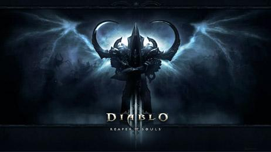
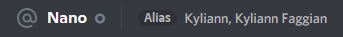
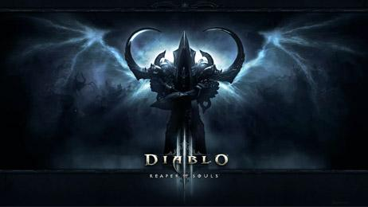
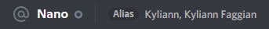

Bonjour, je me présente je me prénomme COUZINET Antonin,
J'ai passé il y a 5 ans de cela un BAC STI2D SIN, depuis j'ai fais 1 ans de cuisine et 4 ans d'immobilier. Après cela j'ai décidé
de me prendre en main et de retourner dans ce que j'aime le plus donc les jeux vidéo, je suis plus passionné par
le game et le level design. Enfin j'adore les jeux vidéos mais je joue tout de même beaucoup moins qu'avant.
Mes jeux favoris :
DOFUS 10/10 ROCKET LEAGUE 9/10 SKYRIM 1000/10 DIABLO III 9/10

 


